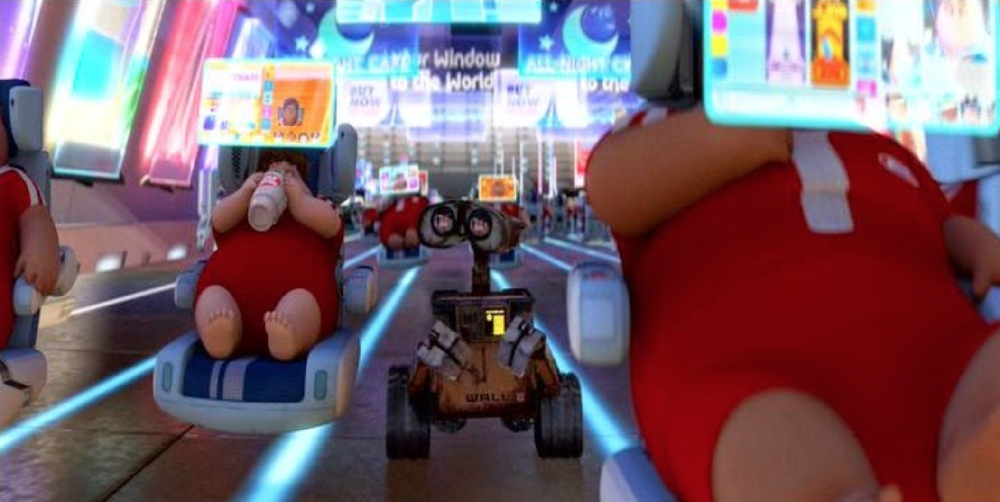
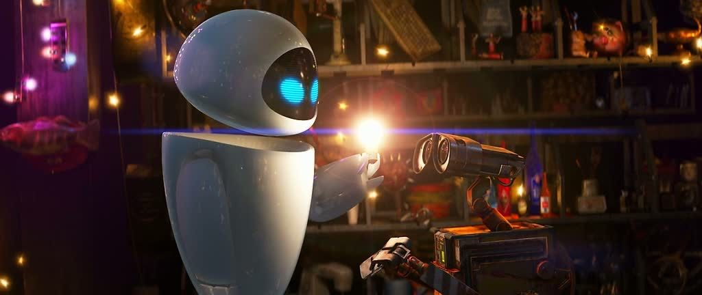

Un personnage responsable attachant
Un film d’animation reconnu
Wall.E est un film d’animation produit par les studios Pixar sorti en 2008 et qui a eu l’honneur de
recevoir l’Oscar du meilleur film d’animation. Ce film d’animation Américain a été parfaitement
conçu pour toucher les émotions du spectateur. Les volumes, les lumières et reliefs donne un
aspect très réaliste au film et nous plonge dans l’histoire de WALL-E. De plus, il est également
connu comme le film sonore le plus artistique de notre génération.

WALL-E et Eve regardant l’horizon. (Pixar)
Réalisé par Andrew Stanton, il trouve la meilleure manière de mettre en évidence les émotions et l’humanisation des robots. Il projette son public 700 ans dans le futur et nous présente le monde de demain, ruiné par la
surconsommation des humains avec une ville constituée de gratte-ciel d’ordures.
Dans tout le paysage, un seul être se déplace. Il s’agit de WALL-E, le dernier robot alimenté par
l’énergie solaire. Il ramasse les déchets, les fourre dans son estomac et les serre en un carré.
Une vie atypique
On découvre peu après que le nom WALL-E prend tout son sens lorsque l’on découvre que ce sont les
initiales de « Waste Allocation Load Lifter Earth-Class », qui se traduirait par « Compacteur de déchets
terrestres ».
Être WALL-E est très solitaire. Ses journées se résume à ranger le pays inondé de déchets ; mais lorsque
qu’il rentre à la maison la nuit on se rend compte du temps passé sur cette terre avec l’accumulation
d’objets et bibelots récupérés lors de ses expéditions.
WALL-E regardant le ciel. (Pixar)
Un changement drastique
Un jour l’ancienne routine de WALL-E est rompue. De nouvelles choses sont apparues dans son monde.
Un robot au design futuriste est envoyé sur la planète Terre, dans le but de trouver le signe d’une
présence végétale. Ce nouveau robot EVE, touche en plein cœur WALL-E. Les échanges entre les deux robots
se feront uniquement par des gestes, des bruits et des expressions du visage.
Comme son objectif l’indique, EVE est le diminutif de « Extra-terrestrial Vegetation Evaluator »
ou «Évaluateur de Végétation Extraterrestre».

WALL-E et Eve chez WALL-E (Pixar)
WALL-E finira par être ramassé par un navire spatial et renvoyé vers les humains, installés en orbite à
bord de gigantesques vaisseaux spatiaux qui ressemblent à des spas pour les paresseux.
Il se retrouvera donc à bord de ce vaisseau avec l’une de ses découvertes récentes : une minuscule plante
verte parfaite, qu’il a trouvé poussant dans les décombres et transplantée dans une vieille chaussure.
Un monde incroyablement terrifiant…
On rencontre alors le quotidien des humains après avoir pollué et détruit la planète Terre, ils se
déplacent couchés sur des chaises volantes, avec un écran constamment sous les yeux ; ce qui a donc
pour conséquence un surpoids collectif amené par la surconsommation et une déconnexion totale de la
réalité

WALL-E dans le monde des humains (Pixar)
Les humains dépourvus de toute capacité physique finiront par rejoindre la planète Terre grâce à la
petite plante verte de Wall-E et faire pousser des milliers d’autres plantes afin de pouvoir survivre
sur cette planète laissée à l’abandon depuis des générations.
Nous ne parlerons pas de la pollution industrielle ou urbaine de ce film.
Mais qu’avons-nous alors dénoncé implicitement ?
Bande Annonce
Gallerie